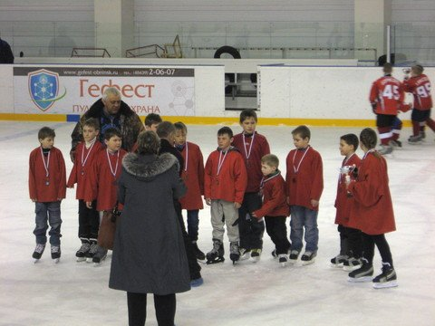
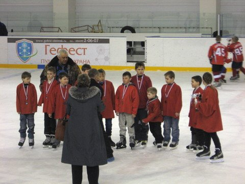
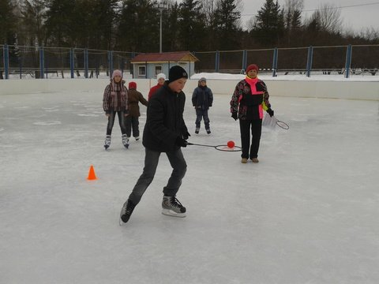
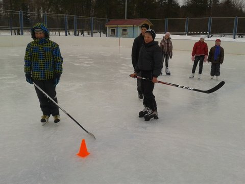
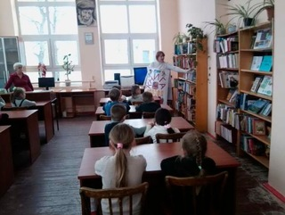
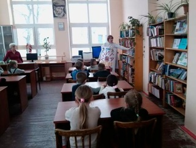
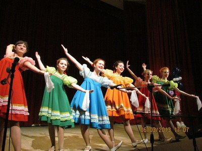
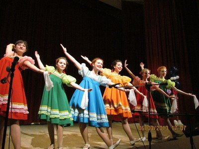

Архив новостей
Команда ДЮСШ г. Тарусы заняла 3 место во II этапе Всероссийских соревнований юных хоккеистов
27 – 28 марта 2013 года Команда хоккеистов МБОУ ДОД ДЮСШ под руководством тренера-преподавателя по хоккею Жигунова Николая Николаевича, приняла участие во II этапе Всероссийских соревнований юных хоккеистов клуба «Золотая шайба» имени А.В. Тарасова и заняла 3 место. В соревнованиях приняли участие обучающиеся Детской юношеской спортивной школы 2002 - 2003 годов рождения.
 

В состав команды ДЮСШ, принявшей участие в соревнованиях, вошли:
- Жучкова Алена
- Коврижкин Георгий
- Островский Иван
- Исаев Андрей
- Шпагин Егор
- Ларин Виктор
- Соловьев Кирилл
- Литвинов Иван
- Бобков Артем
- Федоров Артем
- Березовский Роман
- Наганов Василий
- Быков Иван
Поздравляем юных хоккеистов с заслуженной наградой!
«Проводы зимы на катке»
В субботу, 30 марта 2013 года состоялось спортивное мероприятие «Проводы зимы на катке», которое проводилось в рамках Клуба выходного дня. В соревнованиях приняли участие дети разных возрастов, они смогли продемонстрировать свое умение кататься на коньках, для них были организованы веселые игры и эстафеты. В конце соревнований победителей и участников соревнований наградили грамотами.
 


 


 



{kind=link}
{kind=link}
{kind=link}
{kind=link}
{kind=link}
{kind=link}
{kind=link}
{kind=link}
{kind=link}
{kind=link}
{kind=link}
{kind=link}
{kind=link}